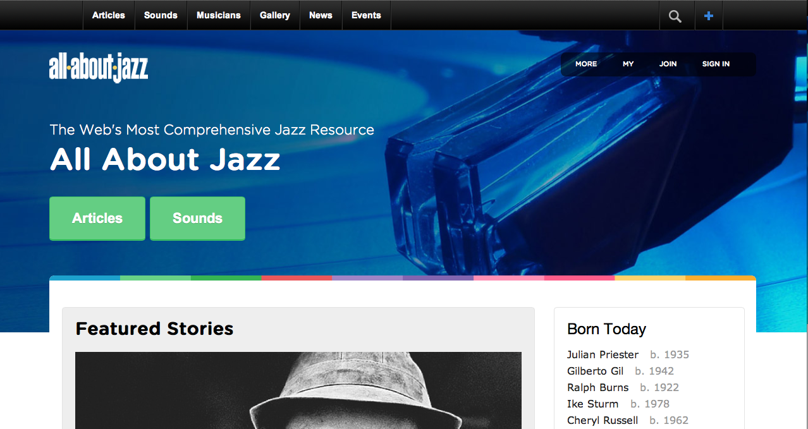
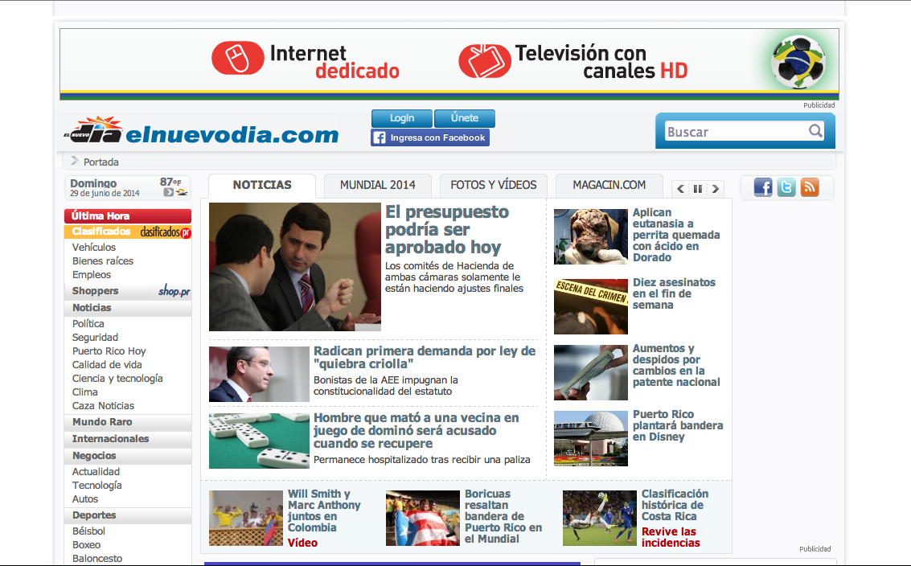

Technical Blog 1.0
by Joan Torres
Hello there!
Thanks for popping by this blog. So for this entry I had to choose 3 of my favorite sites. I have to admit that the first thing I learned is that I do NOT have favorite sites. I frequent a few sites, so I chose the ones that I tend to check more. However, at the end I will mention some sites that even though I don't visit, they did strike me because of their design. So let's dive right in!
Grooveshark
Well... what can I say about Grooveshark? I visit this website a lot to listen to music. I don't tend to visit Pandora because I guess I mostly know what I feel like listening to. Grooveshark offers an on-demand streaming service and I don't even have to sign in to use it. As soon as I reach the front page the first thing I focus on is the search bar. That's probably because I'm hardwired for it. If I stand back maybe the first I'll notice is their own add to get their service everywhere. I think Grooveshark has a pretty modern look. It's pretty interactive (well, it's not really only html). It has a good contrast of colors. It's pretty organized. I guess it's striking to my eye. It works for me. Grooveshark is pretty effective and practical. Finding content (music, playlists, users) on the website is pretty easy and to the point form within any part of the website. The search bar never disappears form the top so we don't lose the possibility to continue searching. Certain things however, seem out of place because they have been tagged incorrectly which lowers their credibility a bit making it feel slightly less professional than it should be. I guess because of the content and their flexibility on usage, the website is pretty fun to have open. I mean, after all, when I'm there I'm enjoying the music I want to enjoy at the moment. They sell their mobile service which I did actually use for a year in order to burn the 'Grooveshark fever'. It was way cheaper back then too.
All About Jazz
This website is All About Jazz and it features news from the jazz world. I visit to find out about events or read about any new releases by some of my favorite artists. Their layout has changed quite a bit in the past year. I'm beginning to feel as though every time I visit I'll be getting a new layout. The current front page basically draws attention to their banner more than anything. I'm not fond of that. I used to be able to see the featured articles without scrolling down. Now I have to. The current layout looks darker than before but it's pretty bright once you scroll down. The fonts and buttons give it a modern touch. Content is always changing so it looks pretty dynamic. It's organized since it divides articles, reviews, and the like. That organization makes it simple too. The layout is pretty minimal too. I think it used to be a bit more crazy. Their focus is a pretty serious one. They want to promote news about Jazz, review albums, DVDs from all over the globe where Jazz is present. The articles and reviews are pretty professional. So the site is pretty practical because it serves their purpose. However, I can feel a bit frustrated when searching for content throughout their website. It gets pretty crazy. Their search opens up in a new tab and although it is powered by Google Search it's not as effective as it should be. That hasn't really improved over the years. Finding something feels cryptic at times specially because I tend to find myself in locations that I can't really tell apart from others. I'm not sure why. The biggest problem is the site not having an updated layout everywhere. So sometimes I get an older layout which can become rather confusing. They don't actually sell anything which I guess is a good thing since people might not be able to find what they're looking for. However, they do promote albums which I have bought.
El Nuevo Dia
El Nuevo Dia is a Puerto Rico newspaper. Their website is basically how we get the news. Even though they have the printed version, their online version is the one that could feature updates on current events or critical situations. Therefore, I tend to visit this site quite a bit to get the news. As soon as I arrive the first thing I focus on is the middle of the website, where they have the most recent news. If I go further back I'm obviously gonna focus on the biggest news being displayed which are probably the most important. To me this site is simple and clean because of their white background, centered content and few colors. However, it could feel a bit cluttered, because many news are displayed at once all over the page. This is common to many news websites though. All the white makes it very bright. Ultimately, all divisions in the website make sure it's foolproof. This is a professional journalism website. There's no doubt about it. The content and the organization add to that. This is after all the website to the undisputed biggest newspaper in Puerto Rico. It's pretty functional, practical, basic and even though it might look outdated, their layout works so there's no need to 'fix' it. They do have a small problem. New content is pretty easy to find. All you need to do is browse through the different sections (business, sports, entertainment, politics) and you'll find the news. However, their search is odd. It search for your query exactly as you type it. For example if you type "Jazz Fest" it will only show up articles that have that exact phrase and not separate that into articles that include both "Jazz" and "Fest" or either individually. Also, you can easily search for articles up to three months old. If you feel like looking for anything older you might have to tweak the search a bit. Ultimately, we go here to visit the recent news. So it works for that. It fails pretty hard on the older articles though. I guess it's good that they don't sell any services (that I know of) except for all the ones in the ads because that search is a big downside.
Designs I Liked
This is a list of websites whose designs I do like. However, I don't really visit them so they weren't a good choice for this entry. I just kinda stumbled upon them throughout the years. Enjoy!
There were more... but I lost 'em. So I'll just leave you with mine so can check 'em out and feedback later.